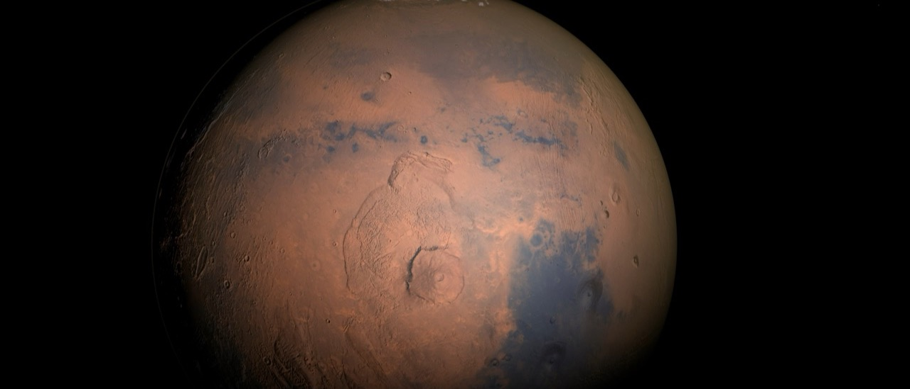
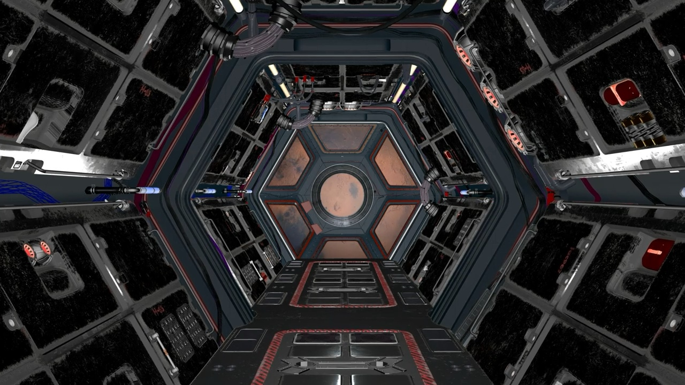
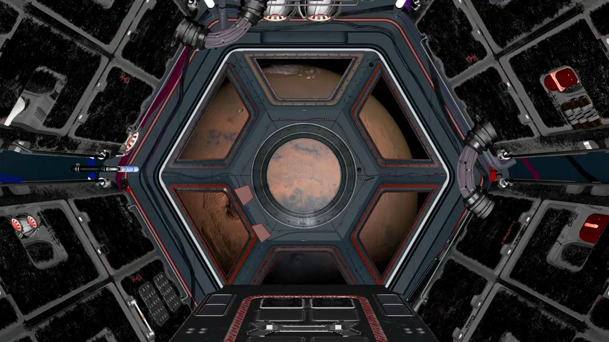
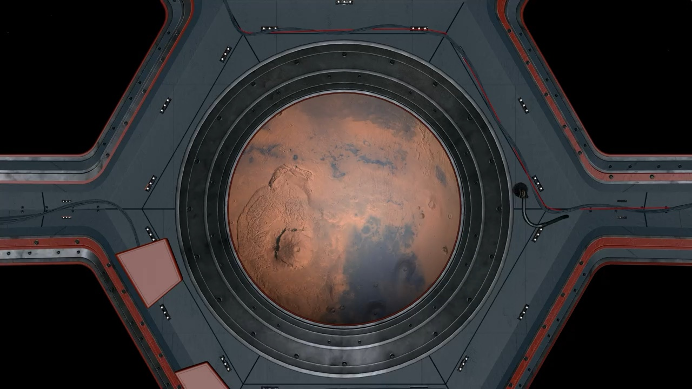
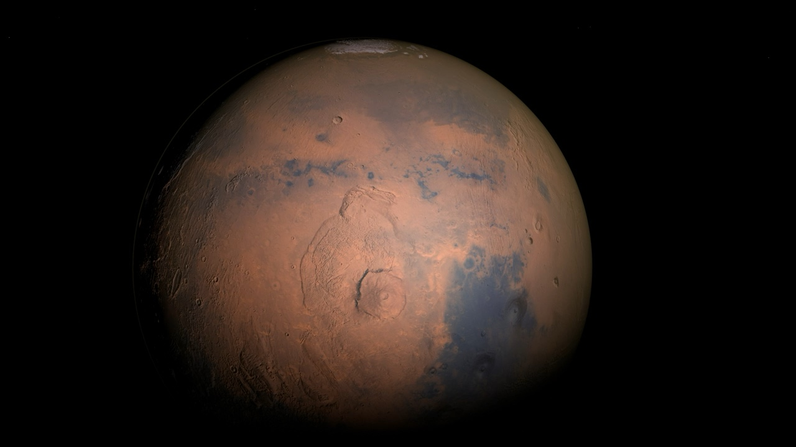

00:00 / 00:00
AIGC 影像 / 2025 / 16 分钟 · 导演 Ye · 编剧 Ye / 顾行 · 摄影 周野 · 剪辑 Ye · 声音 沈默 · 主演 苏行 · 2.39:1 / 5.1
项目档案只读
最后更新 2025.11.27Ye / 导演
木星之下
这是一部关于“看见”的电影。观测员每天记录同一片云带，直到某一天，云带也回过头来看他。我们想拍的不是宇宙的辽阔，而是凝视发生的那一刻。
“我们以为自己在下沉，其实是在被看见。”

制作工具
- 生成式云层模拟
- 天文数据可视化
- 大型遮幅绘景
- 低频环境声设计
01 · 缘起
剧本来自一张木星云带的照片。那些涡旋看起来像指纹，也像一只闭着的眼睛。我们决定不拍飞船，只拍一个人如何被一颗行星慢慢占据。
“不存在的卫星”是观测员给自己找的锚点。他需要相信轨道上还有第二个东西，才能继续一个人待下去。
02 · 世界
观测站悬在木星阴影的边缘，每天有十七分钟照到太阳。其余时间，所有光都来自仪表和行星本身。
观测员的记录本里没有日期，只有云带的编号。他相信只要编号不断，时间就还在。
03 · 视觉语言
画面由三种尺度组成：皮肤的微距、观测窗的中景、云层的巨幅绘景。我们让它们共用同一种颗粒，让行星看起来像皮肤，也让皮肤看起来像地貌。
色彩从赤褐过渡到尘金，最后停在真空黑。红色只在观测员的瞳孔里出现。
04 · 制作规格
实拍 12 天，其中 4 天用于观测舱内的微距。云层由生成影像与手绘遮幅完成，最终在大银幕比例下重新校色；后期 11 周。
资产画布




命名约定
场景ye_木星_场景_观测舱_v03
画面ye_木星_画面_云带_v07
道具ye_木星_道具_记录本_v01
镜头ye_木星_镜头_0017_v05
色板
规格表
- 片长
- 16 分钟
- 画幅
- 2.39:1
- 声音
- 5.1
- 拍摄
- 12 天，2025 秋
- 版本
- 数字电影包 / 生成影像母版
那颗卫星不在星图里。它只在观测员闭眼时出现。
项目档案 · 木星之下上海 · 2025